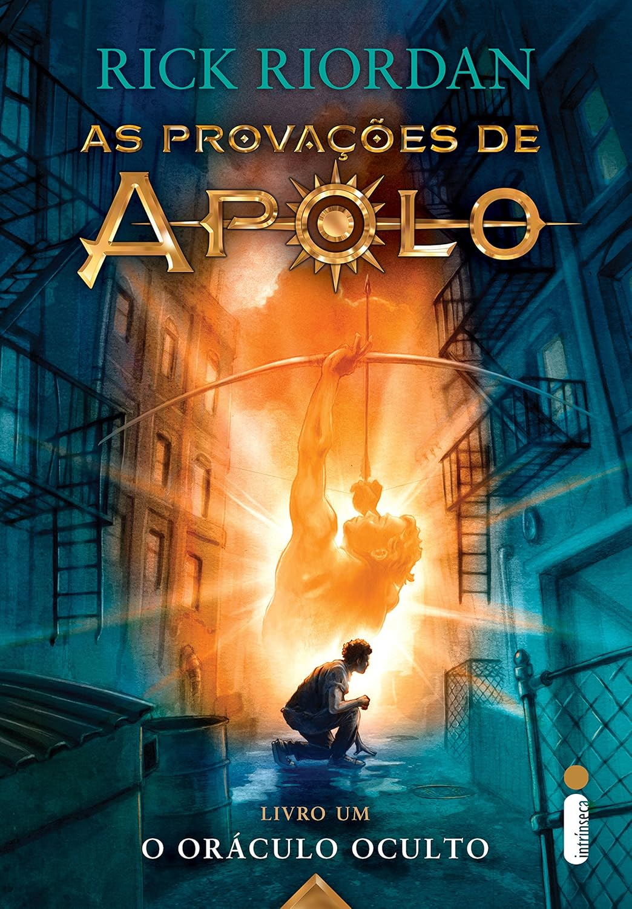
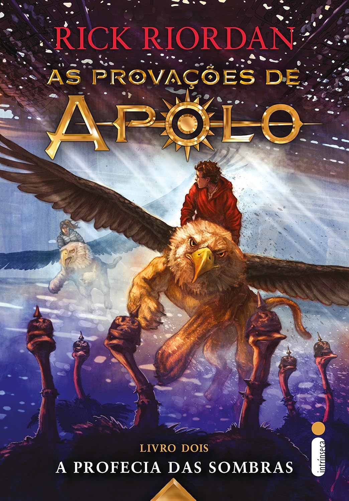
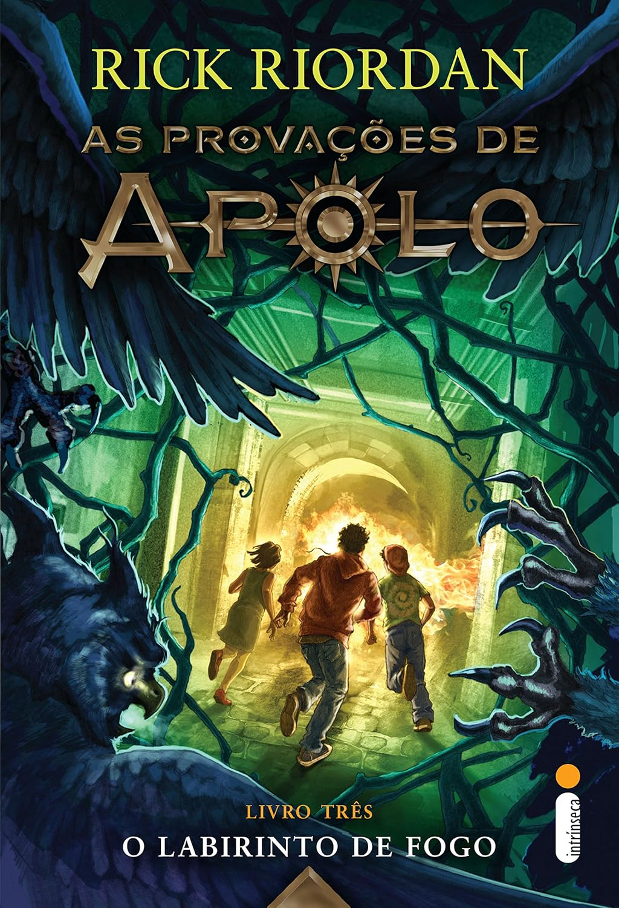
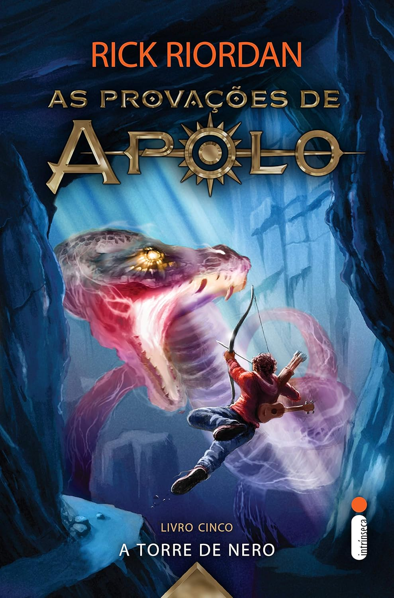
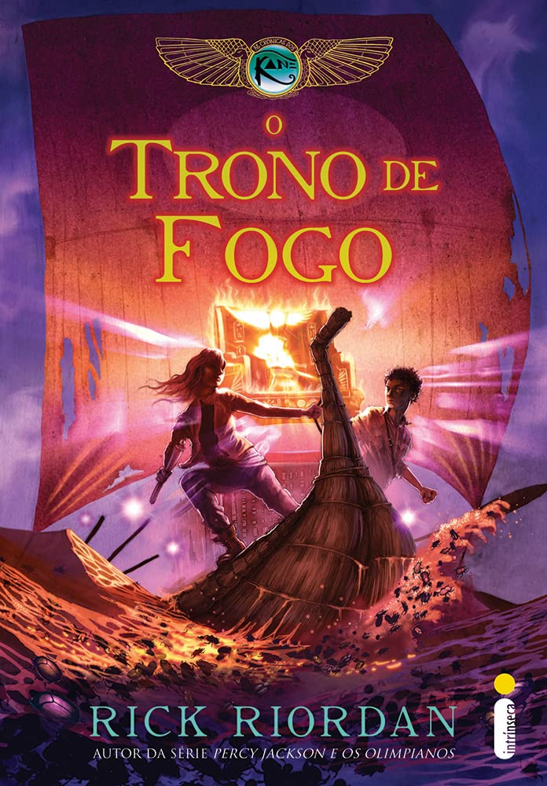
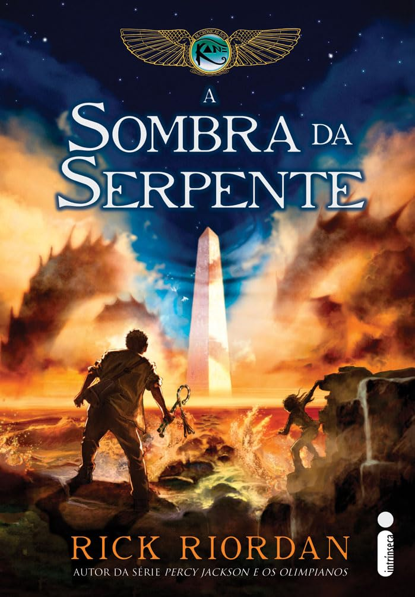

| livro |
titulo do livro |
site de compra |
valor |
descrição |
categoria |
autor |
ano de lançamento |
quantidade de pagina |
|  |
o oraculo oculto |
https://www.amazon.com.br/Or%C3%A1culo-Oculto-Livro-S%C3%A9rie-Prova%C3%A7%C3%B5es/dp/8580579287 |
R$ 60,22 |
Apolo agora Fraco e desorientado, ele agora é Lester Papadopoulos, um adolescente mortal com cabelo encaracolado, espinhas e sem abdome tanquinho. Sem seus poderes, a divindade de quatro mil anos terá que descobrir como sobreviver no mundo moderno e o que fazer para cair novamente nas graças de Zeus. |
aventura |
Rick Riordan |
2016 |
320 |
|  |
a profecia das sombras |
https://www.amazon.com.br/Profecia-das-Sombras-Rick-Riordan/dp/855100171X/ref=pd_bxgy_thbs_d_sccl_1/144-6805753-5507043?pd_rd_w=bqKWr&content-id=amzn1.sym.ea5263f5-901f-4a74-9b73-3fc0e530788d&pf_rd_p=ea5263f5-901f-4a74-9b73-3fc0e530788d&pf_rd_r=E7Q3A40235BTZAA7YAY9&pd_rd_wg=n6yVi&pd_rd_r=8f04c4e6-31ff-4893-9ebc-689d6eb96f4f&pd_rd_i=855100171X&psc=1 |
47,13 |
Em sua mais nova missão, o ex-deus do Sol, da música, da poesia e da paquera precisa localizar e libertar o próximo oráculo da lista: uma caverna assustadora que pode ajudar Apolo a recuperar sua divindade ― isso se não matá-lo ou deixá-lo completamente louco. |
aventura |
Rick Riordan |
2017 |
336 |
|  |
o labirinto de fogo |
https://www.amazon.com.br/Labirinto-Fogo-Prova%C3%A7%C3%B5es-Apolo-prova%C3%A7%C3%B5es/dp/8551003313/ref=pd_bxgy_thbs_d_sccl_1/144-6805753-5507043?pd_rd_w=HOcT1&content-id=amzn1.sym.ea5263f5-901f-4a74-9b73-3fc0e530788d&pf_rd_p=ea5263f5-901f-4a74-9b73-3fc0e530788d&pf_rd_r=7QQFJ3MHH099CZ8EABK9&pd_rd_wg=siTTB&pd_rd_r=f05b89b7-1057-4ed9-90ec-cb4111664f51&pd_rd_i=8551003313&psc=1 |
62,11 |
Com a ajuda de alguns amigos semideuses, como Percy Jackson, Leo Valdez e a desbocada Meg McCaffrey, Apolo conseguiu sobreviver às duas primeiras provações de sua temporada terrena. Agora, ele vai ter que enfrentar mais um componente do triunvirato do mal formado por antigos imperadores romanos e deve descer até o Labirinto de Dédalo para impedir que o terceiro imperador destrua o próximo oráculo da lista. |
aventura |
Rick Riordan |
2018 |
368 |
 |
a tumba do tirano |
https://www.amazon.com.br/Tumba-Do-Tirano-Prova%C3%A7%C3%B5es-Apolo/dp/8551005340/ref=pd_bxgy_thbs_d_sccl_1/144-6805753-5507043?pd_rd_w=JTMY4&content-id=amzn1.sym.ea5263f5-901f-4a74-9b73-3fc0e530788d&pf_rd_p=ea5263f5-901f-4a74-9b73-3fc0e530788d&pf_rd_r=614ASZVGPWNX59AT3NKT&pd_rd_wg=Oz6zR&pd_rd_r=c9ae03c8-7344-48c6-bdec-fa25ede285f8&pd_rd_i=8551005340&psc=1 |
62,30 |
Não é de hoje que Apolo tem passado por poucas e boas em sua temporada terrena. Nos três livros já publicados da série As provações de Apolo , vimos o ex-deus enfrentar terríveis inimigos: um psicopata piromaníaco, um crush das antigas com sede de vingança e até um dos imperadores mais temidos da Antiguidade. Como se isso já não fosse o bastante, ele só pôde contar com sua inteligência e sagacidade humanas (bem reduzidas, como é de se esperar), já que seus poderes foram extintos por tempo indeterminado. A sorte é que nessa jornada ele teve a ajuda de amigos valiosos, como Percy Jackson, Leo Valdez e Meg McCaffrey. |
aventura |
Rick Riordan |
2019 |
400 |
|  |
a torre de nero |
https://www.amazon.com.br/Torre-Nero-S%C3%A9rie-Prova%C3%A7%C3%B5es-Apolo/dp/6555601019/ref=pd_bxgy_thbs_d_sccl_1/144-6805753-5507043?pd_rd_w=npMml&content-id=amzn1.sym.ea5263f5-901f-4a74-9b73-3fc0e530788d&pf_rd_p=ea5263f5-901f-4a74-9b73-3fc0e530788d&pf_rd_r=88WET9KVPMCYNSD58FZN&pd_rd_wg=aNQZZ&pd_rd_r=495f888d-d0de-4385-ad94-f056964c8106&pd_rd_i=6555601019&psc=1 |
55,71 |
Não tem chororô, a jornada de Apolo na Terra acabou! Depois de libertar antigos oráculos, enfrentar criaturas assustadoras, derrotar imperadores malignos e passar por humilhações indescritíveis, o ex-imortal se prepara para sua aventura derradeira entre os mortais. Se quiser retornar ao Olimpo e de quebra salvar seus amigos semideuses, ele terá que derrotar o temido Nero e a arqui-inimiga Píton, que não vê a hora de dominar para sempre o Oráculo de Delfos. |
aventura |
Rick Riordan |
2020 |
336 |
|
a pirâmide vermelha |
https://www.amazon.com.br/pir%C3%A2mide-vermelha-S%C3%A9rie-Cr%C3%B4nicas-Kane/dp/8598078972 |
71,92 |
Desde a morte da mãe, seis anos atrás, Carter Kane viaja o mundo com o pai, o egiptólogo Dr. Julius Kane. Ele não frequenta a escola e seus pertences cabem em uma única mala. Enquanto isso, Sadie, sua irmã mais nova, é criada pelos avós em Londres. Ela tem tudo o que Carter queria: casa, amigos e uma vida "normal". E ele, o que ela mais deseja: conviver com o pai. Depois de tanto tempo separados, os irmãos não tinham praticamente mais nada em comum. |
aventura |
Rick Riordan |
2010 |
448 |
|  |
O trono de fogo |
https://www.amazon.com.br/trono-fogo-S%C3%A9rie-cr%C3%B4nicas-Kane/dp/8580570921/ref=pd_lpo_d_sccl_1/144-6805753-5507043?pd_rd_w=5KjVk&content-id=amzn1.sym.a2197dac-0fbe-4cc8-beca-b52f96ea33d5&pf_rd_p=a2197dac-0fbe-4cc8-beca-b52f96ea33d5&pf_rd_r=JFH7WN10J6TYGTFKZAXQ&pd_rd_wg=XiI48&pd_rd_r=73d1a032-61a0-4ce7-b13b-728d847e908c&pd_rd_i=8580570921&psc=1 |
69,20 |
Descendentes da Casa da Vida, ordem secreta que remonta à época dos faraós, os dois têm poderes especiais, mas ainda não os dominam por completo - refugiados na Casa do Brooklin, que se tornou um local de aprendizado para novos magos, eles correm contra o tempo. Seu inimigo mais ameaçador, Apófis, a serpente do caos, está se erguendo. Se eles não conseguirem impedi-lo, em poucos dias o mundo encontrará um final trágico. |
aventura |
Rick Riordan |
2011 |
400 |
|  |
A sombra da serpente |
https://www.amazon.com.br/Sombra-Serpente-Cr%C3%B4nicas-dos-Kane/dp/8580572010/ref=pd_lpo_d_sccl_2/144-6805753-5507043?pd_rd_w=5KjVk&content-id=amzn1.sym.a2197dac-0fbe-4cc8-beca-b52f96ea33d5&pf_rd_p=a2197dac-0fbe-4cc8-beca-b52f96ea33d5&pf_rd_r=JFH7WN10J6TYGTFKZAXQ&pd_rd_wg=XiI48&pd_rd_r=73d1a032-61a0-4ce7-b13b-728d847e908c&pd_rd_i=8580572010&psc=1 |
68,12 |
Os irmãos sabem que sua herança ancestral lhes reserva um importante papel: seus poderes são fundamentais para a restauração do Maat, a ordem do universo. Mas, uma vez instalado, o Caos é imprevisível, incalculável e incontrolável, e agora que Apófis está livre os Kane têm somente três dias para evitar que a serpente destrua o planeta. Como se isso não bastasse, a sorte deles parece só piorar. |
aventura |
Rick Riordan |
2012 |
352 |
 |
O cálice dos Deuses: |
https://www.amazon.com.br/c%C3%A1lice-dos-Deuses-Jackson-olimpianos/dp/6555606495 |
44,93 |
Depois de salvar o mundo inúmeras vezes de monstros, titãs, gigantes e outras criaturas aterrorizantes, tudo que Percy deseja é que seu último ano no ensino médio seja tranquilo. Infelizmente, os deuses têm outros planos para o jovem herói. Se ele quiser mesmo entrar na universidade, terá que cumprir três missões para conquistar três cartas de recomendação vindas diretamente do Monte Olimpo. |
aventura |
Rick Riordan |
2023 |
272 |
|
A fúria da deusa tríplice |
https://www.amazon.com.br/f%C3%BAria-deusa-tr%C3%ADplice-Jackson-olimpianos/dp/8551009435/ref=pd_lpo_d_sccl_1/144-6805753-5507043?pd_rd_w=k38Yb&content-id=amzn1.sym.a2197dac-0fbe-4cc8-beca-b52f96ea33d5&pf_rd_p=a2197dac-0fbe-4cc8-beca-b52f96ea33d5&pf_rd_r=3R99XK615YNHG0EYJ79P&pd_rd_wg=XrpH4&pd_rd_r=b24bc6dd-a2a1-44bc-8091-d3f1dd9bfde8&pd_rd_i=8551009435&psc=1 |
44,90 |
Percy Jackson só quer se formar no ensino médio e ir para a faculdade com a namorada, Annabeth. Para isso acontecer, no entanto, ele vai precisar cumprir três missões para os deuses gregos. Em O cálice dos deuses , acompanhamos a primeira delas, recuperar o cálice de Ganimedes. Agora, uma nova “oportunidade” é oferecida ao semideus: cuidar dos pets da deusa Hécate enquanto ela passa a semana do Halloween fora. Molezinha, certo? |
aventura |
Rick Riordan |
2024 |
320 |